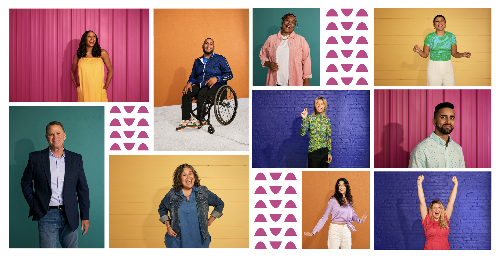
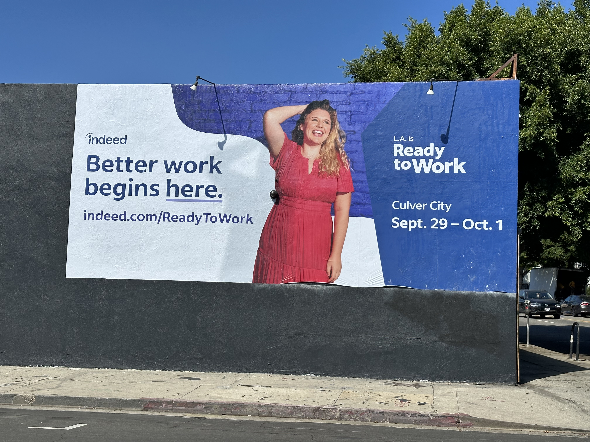
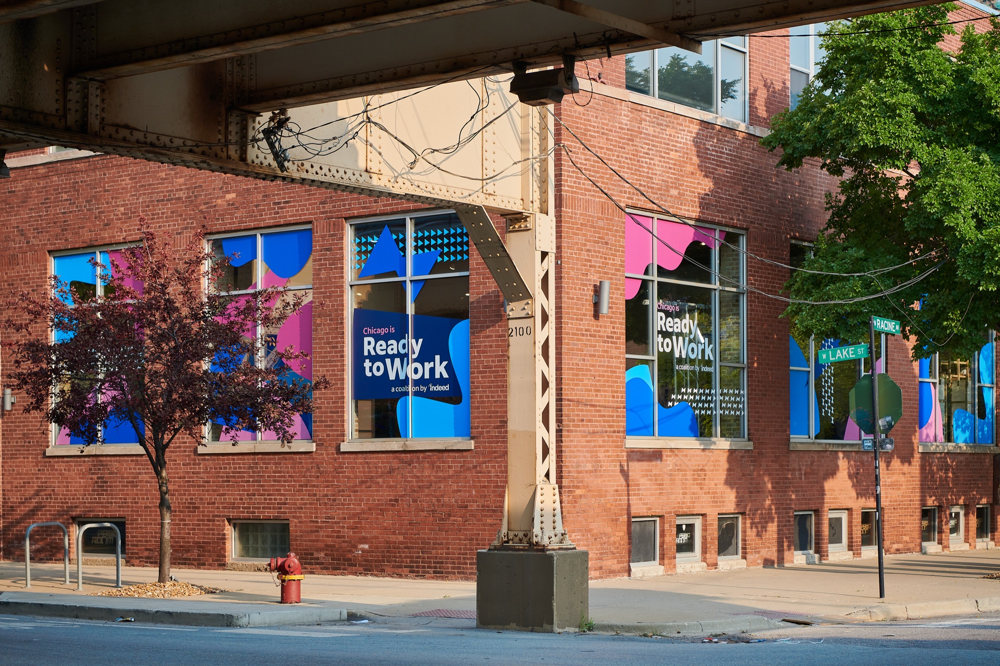
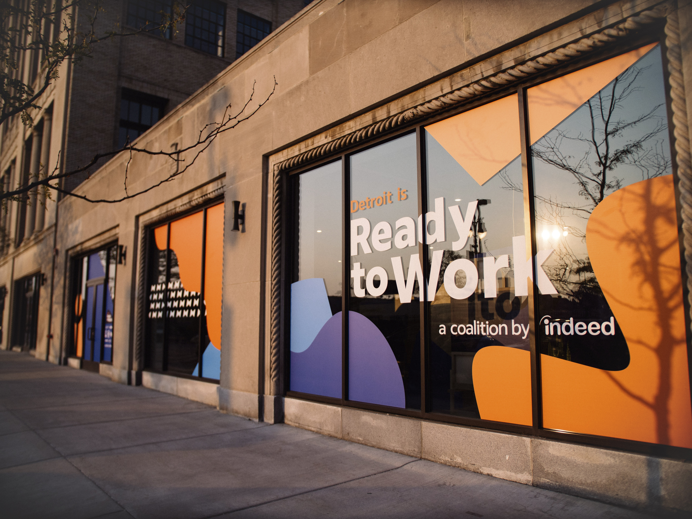
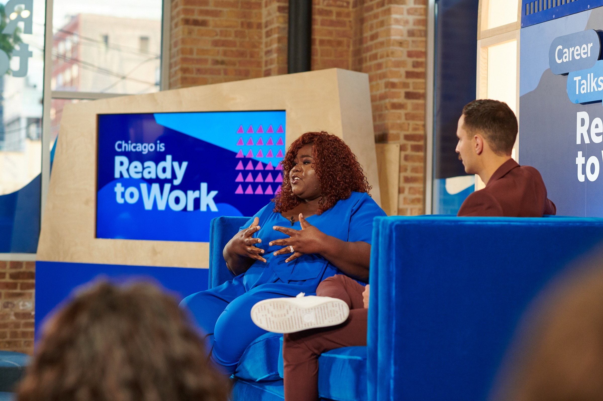
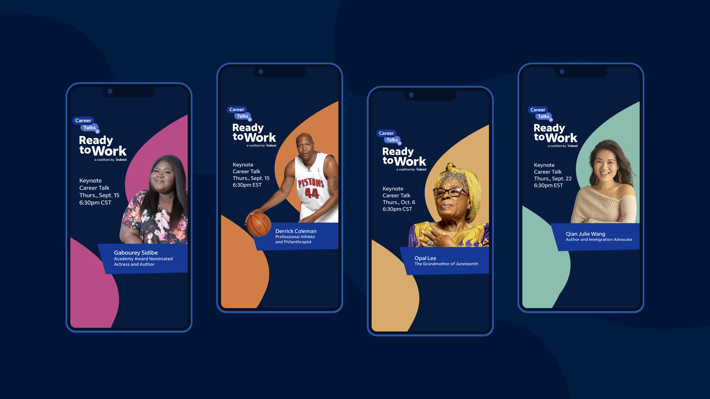
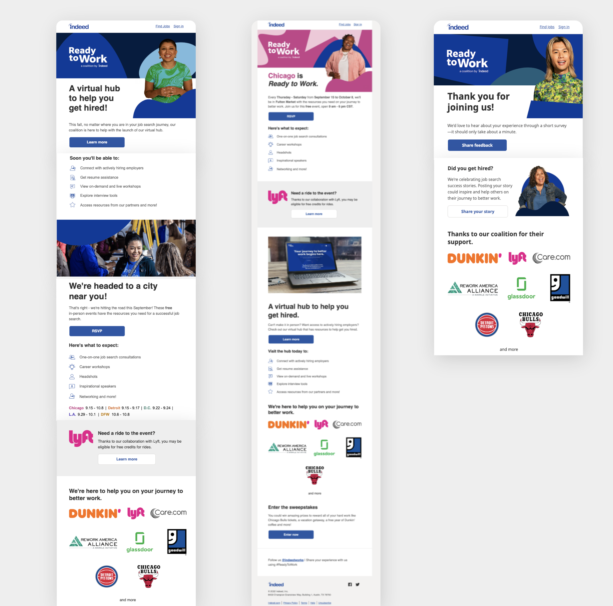

Overview
A campaign that met job seekers
where they were
Ready to Work was Indeed's flagship 5-city activation event, bringing together job seekers and resources in Chicago, Los Angeles, Detroit, Dallas-Fort Worth, and Washington, D.C. The events were filled with engaging activations, talks from renowned speakers, and hands-on help — including the chance to sit down with an Indeed employee for personalized advice on resumes and job applications.
As the lead brand designer and art director, I was responsible for building the complete visual identity of Ready to Work — from the ground up — and ensuring it showed up consistently across every touchpoint: from a billboard in Chicago to a social story, a Lyft ride, and the event floor itself.
5
Cities: Chicago, LA, Detroit, DFW, D.C.
8+
Brand partners including Chicago Bulls, Dunkin', Lyft & Goodwill
🏆
Cannes Lions Award Winner
Challenge
Building trust with job seekers across five very different cities
Indeed needed a visual identity that could feel simultaneously aspirational and approachable — something that would resonate with job seekers at all stages of their search, across markets as different as Los Angeles and Detroit. The brand had to travel: across social media, out-of-home placements, partnership co-branding with eight national companies, and the event environments themselves.
The brief also demanded a fully original photo and film library — no stock imagery. I art directed an original photoshoot and film shoot that would define the visual DNA of the campaign across every channel.

Approach
From logo to billboard to event space — one cohesive world
I developed the complete Ready to Work brand system: a distinctive logo, a bold typographic language, a color palette that balanced energy with approachability, and a set of graphic patterns that could flex across formats. The system was designed to be modular — any partner, any city, any format could slot in without diluting the brand.
For the photo and film shoot, I developed the creative brief, directed the talent and crew, and selected the final imagery. The resulting library became the visual backbone of every out-of-home execution, social asset, and event environment across all five cities.
The campaign was advertised via social media, digital display, billboards, and co-branded partnerships. Partners included:







Outcome
Recognized on the world stage
Ready to Work earned a Cannes Lions Award — one of the most prestigious honors in advertising and design. The campaign successfully reached thousands of job seekers across five major U.S. markets, generating meaningful engagement through both the live event experience and the broader media program.
The brand system proved durable and flexible, supporting eight co-branded partnerships simultaneously while remaining unmistakably its own identity.

Credits
- Group Creative Director
- TJ Walthall
- Creative Director
- Alex McAreavey
- Lead Graphic Designer
- Ginamarie Ivy
- Graphic Designers
- John Bosco, Cate Jarrett, Ryan Sawyer
- Copywriters
- Danny Scheyer and Evan Neuhoff
- Motion Designers
- Matt Stewart
- Videographers
- Zach Honea and Whitney Angstadt
- Account Executives
- Mandy Atkinson and Shelby Gammons
- Photographer
- Mackenzie Smith Kelley